Couverture
Tuiles terre cuite, béton ou verre, ardoise naturelle, tôles et panneaux d'acier, fibrociment, plaques translucides et bardeaux. Les gammes sont exposées au dépôt de Grandvillars.

Les marques ci-dessous sont celles que nous travaillons le plus. Cliquez sur un logo pour voir toute la gamme du fournisseur : ce qui n’est pas en stock, nous le commandons.
Couverture en tuile
Terre cuite, béton et verre
- Jura Nova
- MegaS
- Optima
- Côte de Beaune
- Volany Tandem
- H 10 flammé rustique
- PV 10 flammé rustique
- Standard 9 rouge
- Tuiles de verre
- Faîtières et accessoires
Nos fournisseurs

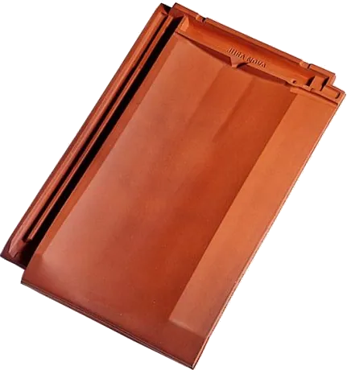
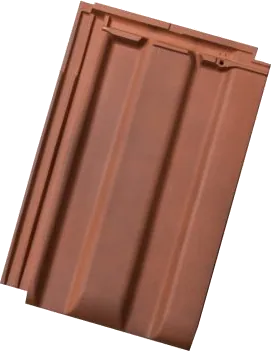
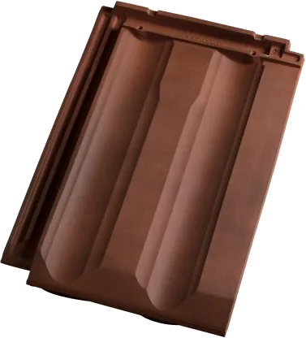
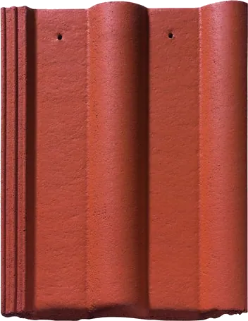
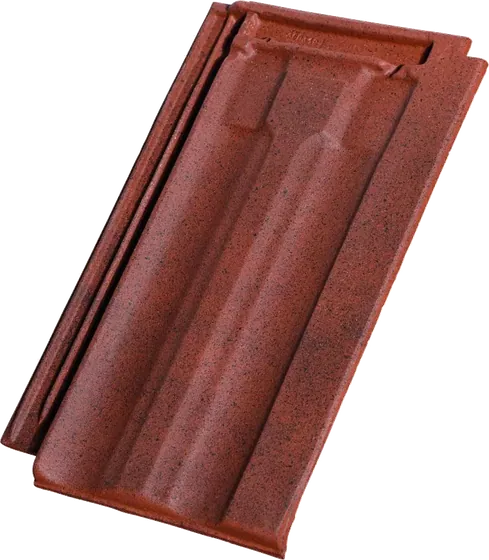
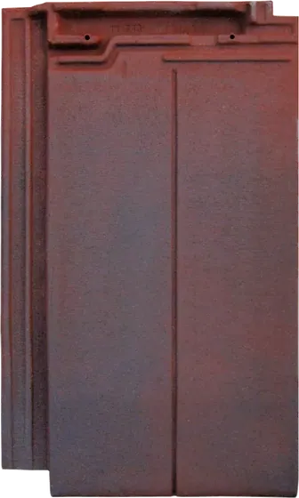
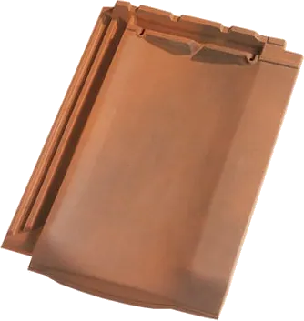
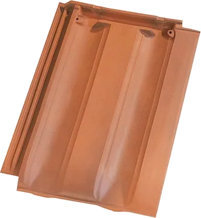
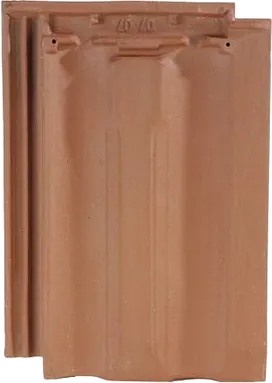
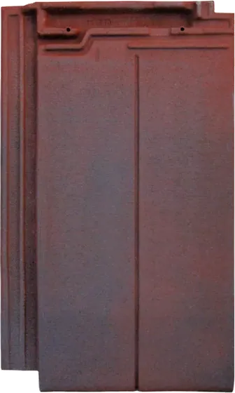
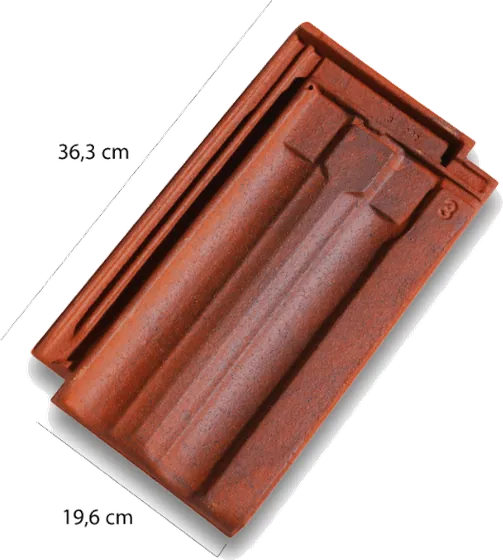
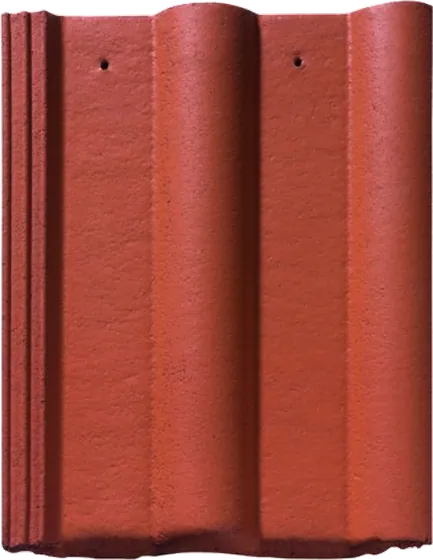
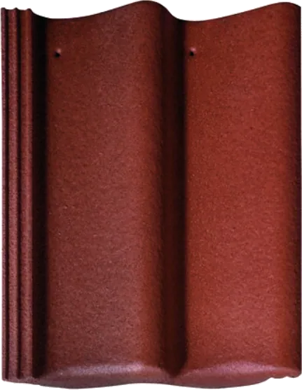
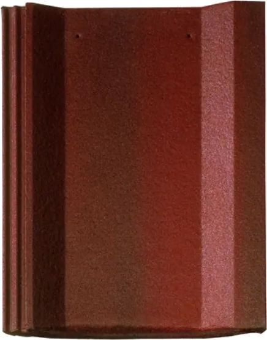
Couverture en tôle d'acier sec
Bacs acier et tôles nervurées
- Halny 6.183
- Fréquence 5.177.51
- Trapeza 3.45.1000 TS
- JI 45/333/1000
- JI 33/250/1000
- JI 46/150/900
- Rives et solins
Nos fournisseurs
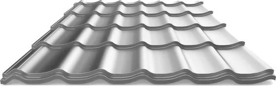
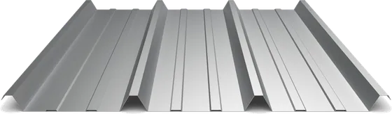
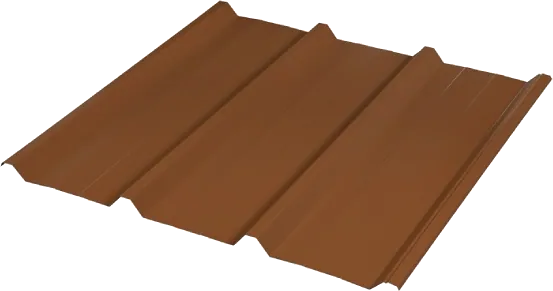
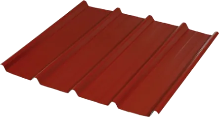
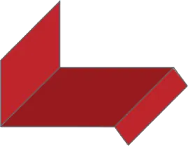
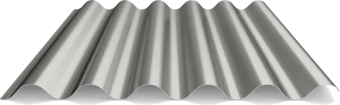
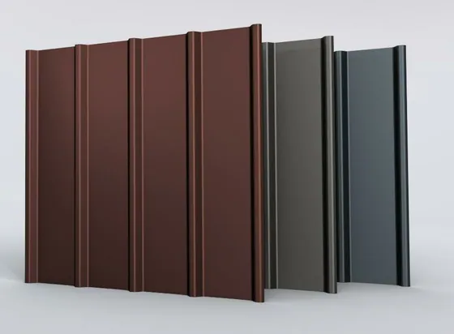
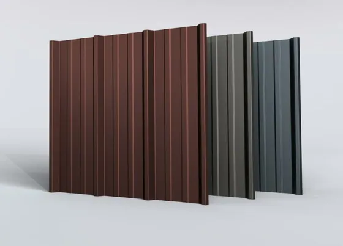
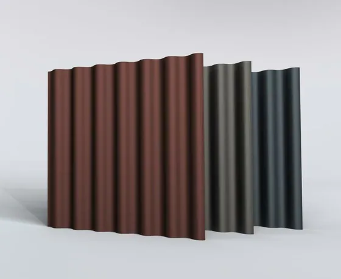
Couverture en panneaux d'acier isolés
Panneaux sandwich
- Ondatherm TH, ép. 80 mm
- Ondatherm L
- Ondarock T
- JI Roof Plus
- JI TF Wall 1100
Nos fournisseurs
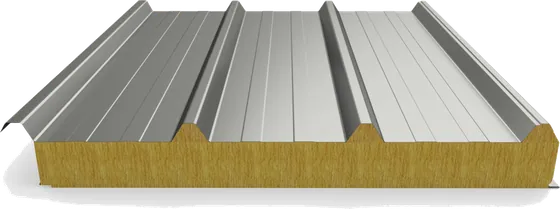
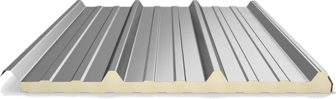
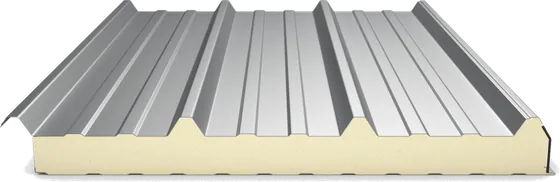
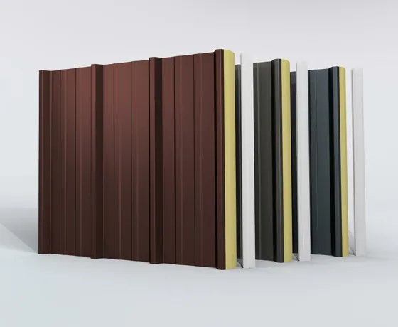
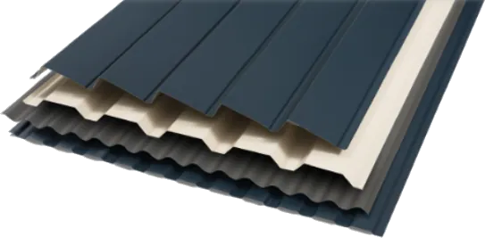
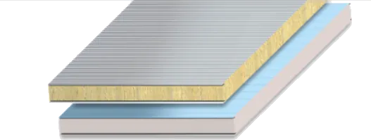
Couverture en ardoise
Ardoise naturelle
- Ardoise naturelle
- Crochets et accessoires de pose
Nos fournisseurs
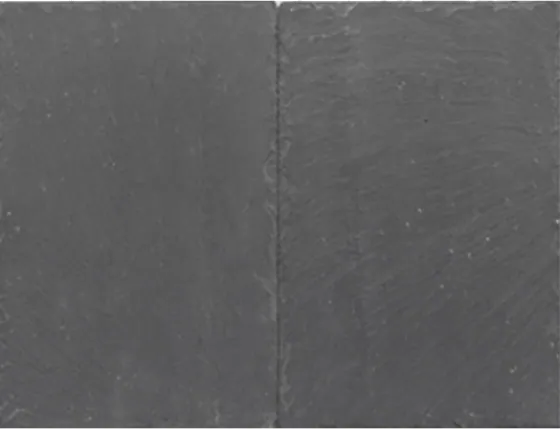
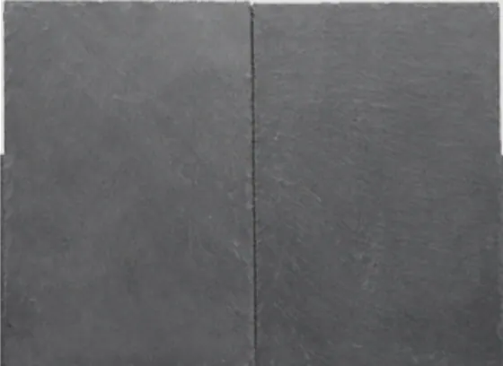
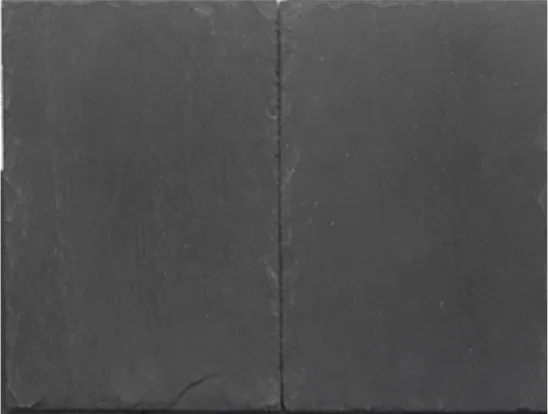
Couverture en fibrociment
Plaques ondulées
- Plaques ondulées
- Agrotherm Plus rouge
- Coloragri
Nos fournisseurs
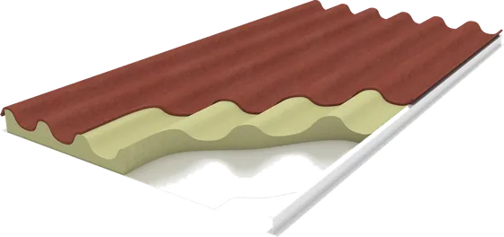
Couverture translucide
PVC, polycarbonate et polyester
- Onduclair PC opaline
- Onduclair PC cristal
- Thermoclear Plus 6 mm
- Thermoclear Plus 10 mm
- Polycarbonate compact UV 2 faces
Nos fournisseurs
Couverture en bardeau
Bardeaux bitumés
- Sopratuile 4 pattes
- Bardoline Classic 3 pattes
- Versite
Nos fournisseurs


Autres couvertures
Bitume, joints debout, tasseaux
- Bitume
- Joints debout
- Tasseaux
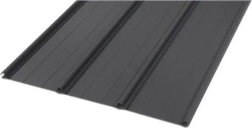
Au dépôt
Une partie du stock, photographiée chez nous.

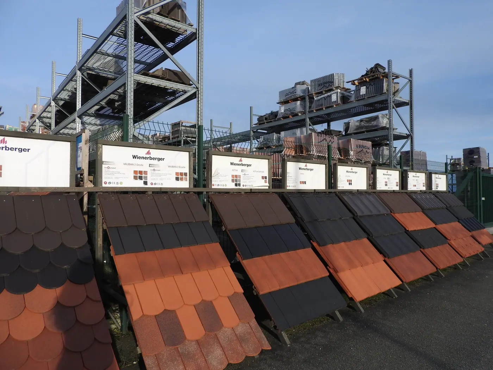
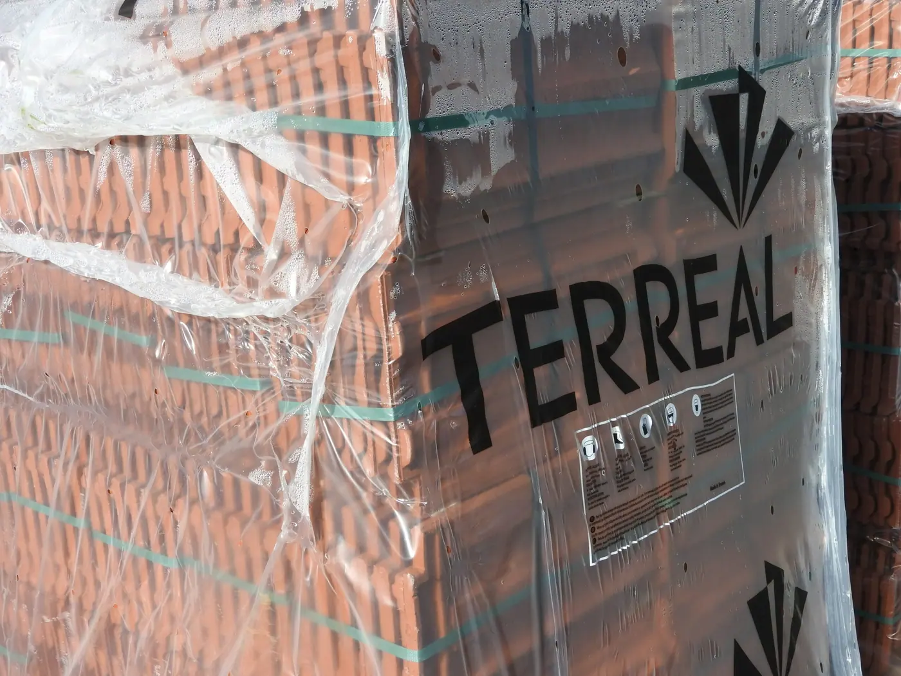
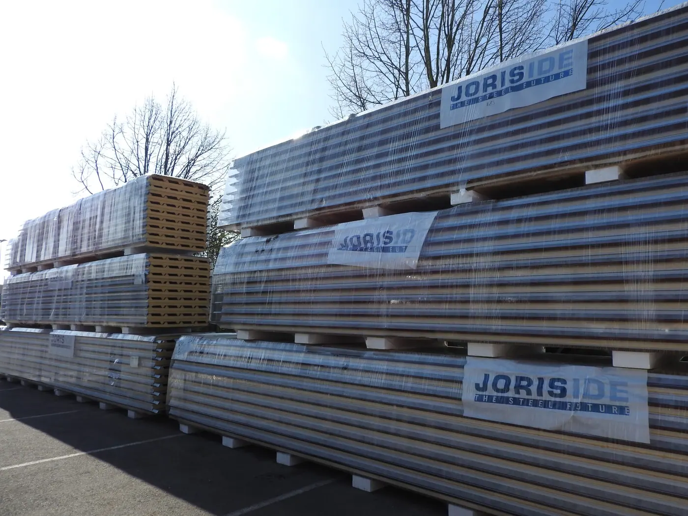